1. Introduction
The Interoperability Blueprint provides business, organisational, and technical guidelines for building our own Local Digital Twin (LDT) and interconnecting with other LDTs. An LDT is a digital representation of physical assets, systems, or processes in a defined local context (for example, city, district, building, industry, port, and airport). LDTs are based on structured data models and contextualised data. They leverage either historical data, near real-time data, or real-time data, and they enable visualisation, analysis, simulation, and reasoning services that support decision-making. First, we will elaborate on why LDTs can be useful, followed by a high-level overview of an LDT. Next, we will explain the importance of being able to add new components to an LDT (Section 1.3) and discover existing components that can be added to an LDT (Section 1.4). Finally, we will discuss how this blueprint aligns with Minimum Interoperability Mechanisms (MIMs) Plus (Section 1.5) and how data spaces and LDTs are related (Section 1.6). The remainder of this deliverable is structured as follows:
-
Chapter 2: The business and organisational building blocks and the technical building blocks.
-
Chapter 3: The workflows an LDT should support.
-
Chapter 4: The technical architecture and the business and organisational overview.
-
Chapter 5: How the business and organisational architecture and technical architecture support the workflows.
-
Chapter 6: How to build an LDT based on the other chapters.
Although this blueprint mainly guides us through the process of building a new LDT with the focus on interoperability, we can also use its recommendations for updating an existing LDT and interlinking LDTs. The scope of the blueprint isn’t to offer guidelines for every use case in which an LDT is being built or has been built, as every LDT operates in a very specific context.
1.1. Why use an LDT
An LDT is a virtual replica of a territory based on structured data models, real-time data feeds, and potentially 3D representations, which can integrate simulation models (flows, usage, impacts, and so on). It aims to dynamically represent the territory at various spatial and temporal scales to analyse, understand, anticipate, and simulate the effects of public policies, environmental hazards, climate change, development projects or disruptions. The digital twin supports strategic decision-making, consultation, foresight, and scenario design. It can even include automated decision-making and execution. It can incorporate historical datasets, time-delayed data, Building Information Modelling (BIM), Geographic Information Systems (GIS), and/or specific models (mobility, climate, energy, and so on). LDTs can offer the following capabilities to users:
-
Descriptive: Current (and past) state of the real-world asset - static and dynamic. Bidirectional connection between real-world assets and the LDT.
-
Predictive: Extends the descriptive capability by providing predictions on the way the real asset could evolve in the future, using predictive models to envision possible futures.
-
Prospective: Conducts "what-if" analyses to evaluate the potential consequences of actions.
-
Prescriptive: Extends (or, in extreme cases, executes) the prospective capability with suggested actions on the real system to achieve a given objective based on the analysis.
-
Diagnostic: Explains situations or alerts about deviations from expected conditions. Capability for evaluating what happened, especially in the case of a malfunction of the real asset.
Note that we do not derive this definition of an LDT from a formal international standard. Instead, it is a project-specific conceptualisation influenced by existing frameworks such as Digital Twins, the EU LDT Toolbox, MIMs Plus 8 on Local Digital Twins, Smart City models, and Data Spaces. While relevant standards (for example, ISO 23247, ISO/IEC 30182, and ISO 30173) provide partial guidance, there is currently no universally accepted standard definition for LDTs in the context of urban or territorial systems.
1.2. High-level overview of an LDT
An LDT has three levels, Base, Core, and Surface (see Figure 1), representing a logical data pipeline from raw data ingestion to end-user interaction, as proposed in Deliverable 3.8:
-
LDT Base contains the foundational connection to the territory through sensor data (for example, IoT), modelled assets (for example, BIM), other external information (for example, socio-economic data or from external systems) and potentially even actuators such as APIs. This level uses the component Data Sources.
-
LDT Core contains the technical components that enable data exchange, contextualisation, and transformation into usable digital representations. This level uses the components Data Acquisition, Data Management, and Connectivity.
-
LDT Surface contains the analysis components, visualisations, and supporting human-interaction tools for decision-making within a service. This level uses the components Connectivity, Analysis, Visualisations, and Decision-Making.
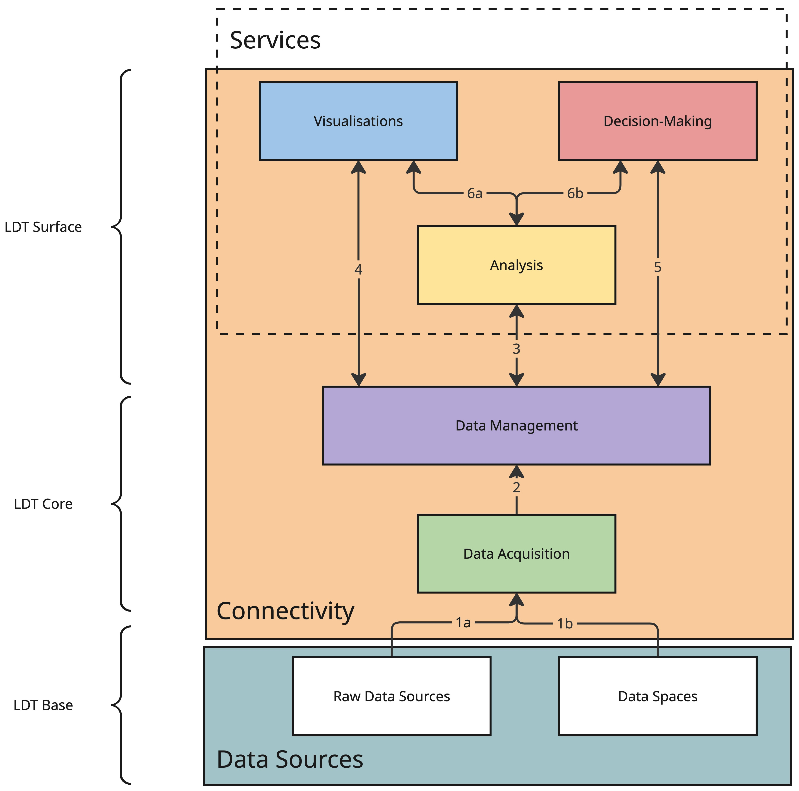
We describe each component below:
-
Data Sources (grey) comprise the sources of information describing the territory, including physical sensors, administrative systems, external datasets, and modelling frameworks such as BIM or simulation models. These sources include those accessible through (local) data spaces. A data space is an interoperable framework for data exchange, based on common governance principles, standards, practices and enabling services, that enables trusted data transactions between participants.
-
Data Acquisition (green) collects data from sources (arrows 1a and 1b in Figure 1) and prepares it for use through ingestion pipelines, syntactic transformations, quality checks, buffering, and staging mechanisms, ensuring data is available, reliable, and ready for contextualisation.
-
Connectivity (orange) enables secure and interoperable data exchange across components and LDTs through interfaces, connectors, access control mechanisms, and federation services that support controlled sharing and discovery.
-
Data Management (purple) manages the representation, linking, and persistence of contextual information coming from the Data acquisition component (arrow 2 in Figure 1) through ontologies, data models, and data management services that support semantic alignment and the storage of historical or evolving states.
-
Analysis (yellow) provides analytical, simulation, and AI capabilities that augment data coming from the Data Management component (arrow 3 in Figure 1). These augmentations include insights, predictions, and inferences, including algorithms for pattern detection, forecasting, optimisation, and decision support.
-
Visualisations (blue) provide dashboards, spatial and temporal views, and interactive interfaces that enable end-users to explore, interpret, and interact with he outputs of services and analyses within an LDT (arrows 4 and 6a in Figure 1).
-
Decision-Making (red) provides supporting tools for planning, participation channels, and notifications (arrows 5 and 6b in Figure 1).
A Service is not a standalone component itself, but consists of a logical composition of the analysis, visualisations, and decision-making tools. A single service may include multiple visualisations, while individual components (for example, visualisations or analysis modules) can be reused across multiple services. A Service represents a higher-level abstraction that delivers value to end-users by orchestrating multiple underlying components.
1.3. Adding a new Surface-level component to an existing LDT, reusing Core and Base-level components
Once we have built an LDT, it’s important that we can still add new Surface-level components (SLCs) to ensure that new needs, coming from new and updated use cases, can be fulfilled (see Figure 2). While adding new SLCs, we want to
-
keep the LDT’s architecture/design as is,
-
keep support for existing components, if desirable,
-
limit the changes to these existing components, and
-
limit the effects on other components if existing components need to be replaced.

Each SLC might have specific requirements regarding different aspects, including, but not limited to
-
data models,
-
data exchange types,
-
provenance, traceability, and observability,
-
access and usage policies,
-
which party deploys and maintains the component, and
-
regulatory compliance.
Our LDT might not meet these requirements out of the box, but the LDT’s design should limit the necessary changes to business, organisational, and technical aspects to fulfil these requirements. Some examples of new SLCs are
-
energy consumption prediction of buildings,
-
air pollution and urban heat island maps, and
-
traffic congestion or flooding prediction and corresponding impact analysis.
1.4. Discovering which Surface-level components work on which existing LDTs and exchanging components through interconnected LDTs
While the previous section focuses on integrating a selected Surface-level component (SLC) into an existing LDT, interoperability should also support an earlier step: identifying which SLCs are suitable candidates in the first place. As increasing numbers of SLCs are developed by cities, service providers, and research initiatives, ideally, LDTs should be able to discover which of these components are compatible with their existing Base and Core-level components, and what adaptations would be required where full compatibility is not available (see Figure 3).
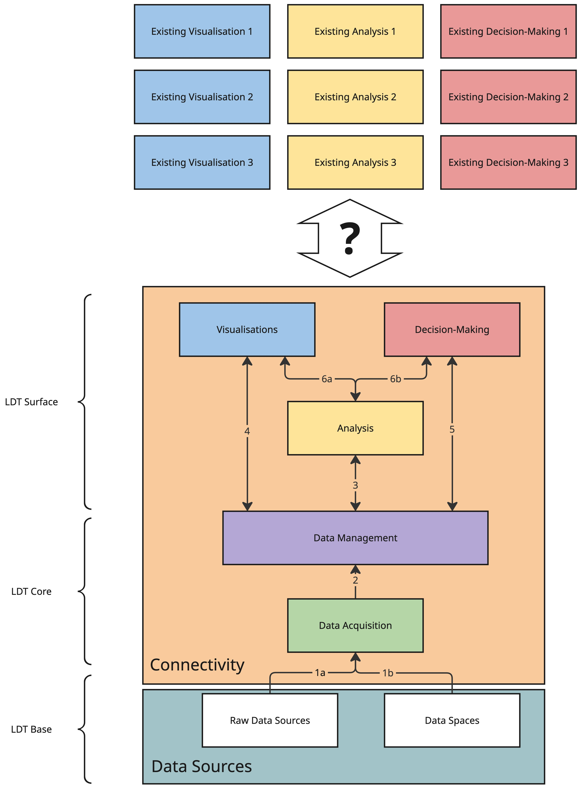
This is important because testing and deploying a new SLC can be costly in terms of time, effort, and governance. Before starting integration work, an LDT should therefore be able to assess whether a candidate SLC is likely to work with its available data, interfaces, policies, and organisational conditions. Such an assessment may consider, for example, the data models used, supported data exchange types, provenance and observability requirements, access and usage policies, and deployment responsibilities. Rather than repeating the full integration process for every candidate, the LDT should be able to compare its existing capabilities with the requirements published by the SLC and determine whether the component is
-
compatible out of the box,
-
compatible with limited adaptations, or
-
not currently compatible.
This discoverability is especially valuable in interconnected LDT ecosystems, where components developed in one context may be reused in another. For example, air pollution or urban heat island visualisations developed for one city could be reused by other cities if those LDTs can determine that the required data and interfaces are available. Similarly, AI models for traffic congestion prediction and impact analysis may be useful beyond the city in which they were originally developed, provided that other LDTs can assess whether their data, policies, and deployment conditions are sufficient to support them.
At the same time, discoverability is not only beneficial for city-to-city reuse. It can also support the emergence of an ecosystem in which external service providers offer new capabilities to existing LDTs. If an LDT describes the requirements, interfaces, and policies of SLCs in a consistent and machine-readable way, providers can develop reusable components that are easier to adopt across multiple LDTs. Additionally, LDT operators can more easily identify which offerings match their needs and constraints. In this way, interoperability helps create the conditions for a broader market of reusable LDT services and components, reducing duplication of effort and accelerating innovation.
By enabling this kind of discovery and compatibility assessment, the LDT reduces the cost and uncertainty of experimentation, supports both public-sector reuse and market-based innovation, and strengthens interoperability across interconnected LDTs.
1.5. Alignment with MIMs Plus
The MIMs Plus emerged as part of the Living-in.EU movement to enable a minimal but sufficient level of interoperability of data, systems, and services, particularly in the context of smart city solutions. By facilitating this minimum level, MIMs Plus contributes to the development of a coherent global market and collaboration focused on solutions, services, and data. They are not closed standards, but evolving recommendations, co-developed with local and regional authorities and interested stakeholders, and aligned with European frameworks.
Each of the 9 MIMs identifies an area in which interoperable mechanisms need to be put in place. At the time of publication of this deliverable, the MIMs Plus' framework is at version 8 and distinguishes between two main categories: foundational MIMs, which provide essential functionality for data interoperability within a city’s data ecosystem; application-specific MIMs, which will enhance the functionality of the data ecosystem by introducing interoperability in specific application areas. For this deliverable, it is important to highlight the application-based MIM8 - Local Digital Twin. MIM8 describes the following 6 layers:
-
Layer 1: Data acquisition (historic/near real-time/real-time data), including sensing, extraction, and synthetic data generation.
-
Layer 2: Connectivity, including APIs, protocols, and file sharing.
-
Layer 3: Data pre-processing, including semantics, interoperability, and aggregation.
-
Layer 4: Analysis and simulation, including AI Models and physics-based simulations.
-
Layer 5: Communication of results (visualisation), including dashboards, multi-dimensional visualisations, natural language interfaces (like chatbots), and virtual reality.
-
Layer 6: Decision-making, including prescription, support, and automation.
Layer 1 (Data acquisition) aligns with the Data Acquisition component of our high-level overview of an LDT; layer 2 (Connectivity) with the Connectivity and Data Management component; layer 3 (Data pre-processing) with the Data acquisition and Data Management components; layer 4 (Analysis and simulation) with the Analysis component, which includes simulation; layer 5 (Communication of results) with the Visualisation component; and layer 6 (Decision-making) with the Visualisations (support), Analysis (automation), and Decision-Making (prescription, support) components (see Figure 4).
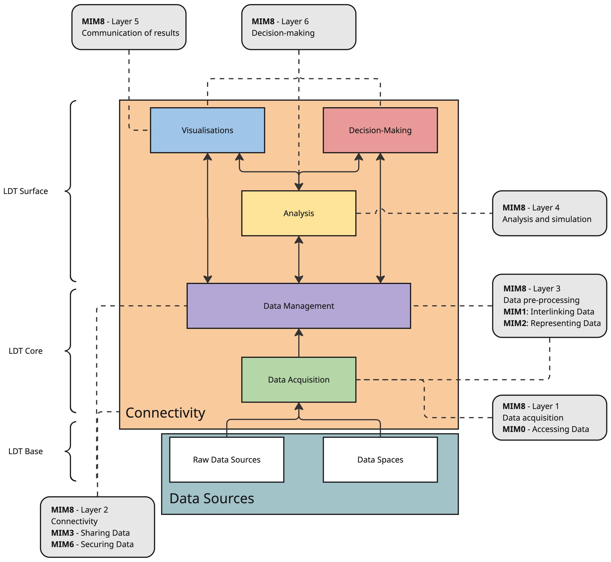
Next to defining the typical layers of an LDT, MIM8 provides more details on an LDT’s capabilities: LDTs are able to share data with other data ecosystems, LDTs are able to share services, and LDTs are able to share SLCs. Moreover, other MIMs, notably the Foundational MIMs, provide interoperability mechanisms dealing with Accessing Data (MIM0), which aligns with the Data Acquisition component; Interlinking Data (MIM1) and Representing Data (MIM2), which align with the Data Acquisition and Data Management components; Sharing Data (MIM3) and Securing Data (MIM6), which align with the Data Management and Connectivity component.
1.6. Relationship between data spaces and LDTs
An LDT can participate in a data space and may assume multiple roles, including both data consumer and data provider. As a data consumer, an LDT can access data sources through a trusted and governed ecosystem (see Figure 5). This allows the LDT to ingest primary data, such as IoT data streams, from multiple organisations and territories, thereby extending its reach beyond the systems directly operated within its own local context. In addition, an LDT can obtain more elaborate data products through a data space, including outputs generated by external systems and services. These may enrich the LDT’s own simulations, predictions, and analyses. In this sense, a data space is not only a mechanism for exchanging raw data, but also an enabler for building more complex systems by combining the outputs of multiple services in a governed way.
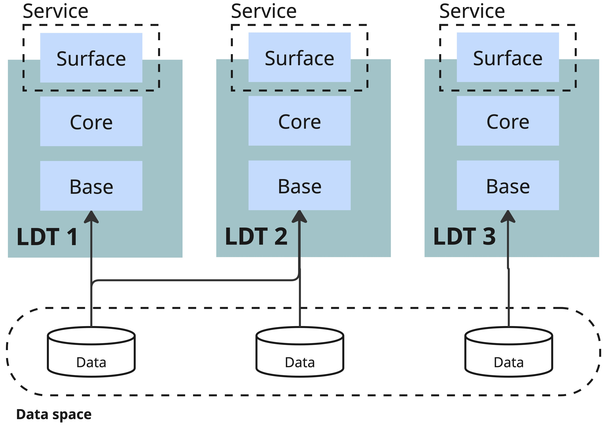
As a data provider, an LDT can also expose part of its own outputs to other participants in the data space. Although the outputs of an LDT are intrinsically linked to the territory with which it is associated, this does not mean that they are useful only within that single LDT. Several LDTs may cover the same territory while focusing on different dimensions of it, and these perspectives are not mutually exclusive. Therefore, the outputs of one LDT may become valuable inputs for another. In particular, LDTs can share analysis results, predictions, simulations, and derived datasets through a data space so that other systems can reuse them under agreed governance and usage conditions. For example, one LDT may focus on traffic and provide traffic predictions, simulations, and analysis tools for a given territory. Another LDT covering the same territory may focus on environmental quality and use those traffic results as input to estimate emissions or air-quality impacts. This LDT could then combine these results with additional variables, such as industrial emissions, weather forecasts, wind behaviour, street topology, and the presence of green areas, to obtain a more comprehensive understanding of pollutant propagation and absorption. In this way, a data space can support the composition of complementary LDT capabilities across systems. From a practical perspective, current data space technologies can provide several capabilities that are relevant for LDTs:
-
Trusted and governed data sharing. Data spaces provide a framework for secure and policy-based exchange of data and data products between participants.
-
Compute-to-Data. This makes it possible to generate value from data while keeping the data at its source. Instead of transferring sensitive or restricted datasets, computation is brought to the data, and only the agreed results are shared.
-
Access to data services and APIs. Data spaces may expose not only datasets, but also data services and operational capabilities, such as APIs, processing services, simulation services, or other reusable components that can be invoked by LDTs.
-
Discovery of data and services. Through mechanisms such as catalogues, registries, or marketplaces, data spaces can support the discovery of relevant datasets, services, and offerings that may be integrated into an LDT.
Figure 6 illustrates how LDTs can reuse the Surface-level components of another LDT. In doing so, these components may use the same data or different data obtained through the data space, depending on the needs and context of each LDT.

Overall, the relationship between LDTs and data spaces is bidirectional. Data spaces can strengthen LDTs by providing governed access to external data and services, while LDTs can contribute back valuable derived data products and capabilities. This makes data spaces a key interoperability mechanism for connecting LDTs with broader digital ecosystems.
2. LDT building blocks based on DSSC & DS4SSCC-DEP building blocks
Building on the fact that LDTs can act as data consumers and data providers in data space ecosystems, this blueprint proposes to reuse the DSSC & DS4SSCC-DEP Blueprints and their building blocks to a certain extent (see Figure 7). The DSSC Blueprint defines a set of business, organisational, and technical building blocks, which need to be implemented in the context of data spaces. The application of each of these building blocks in the context of smart cities and communities was refined in the DS4SSCC-DEP project. Here, relevant implementations for each building block were identified. In LDT4SSC, these refined and detailed building blocks are then applied to the context of interconnected local digital twins. Again, practical implementations are identified, and new, LDT-specific building blocks are added.
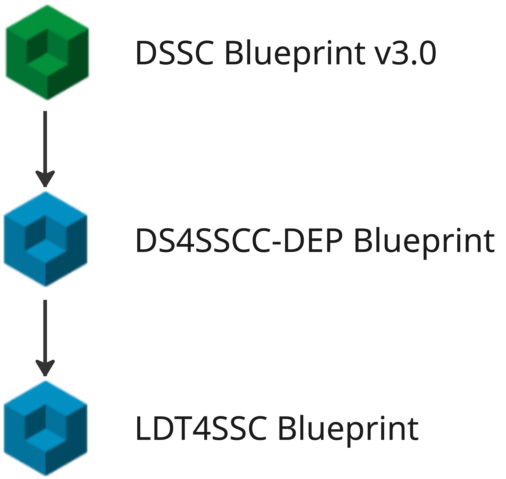
In § 2.1 Business and organisational building blocks and § 2.2 Technical building blocks, we list the business and organisational building blocks and the technical building blocks, respectively. The blocks' summaries are altered to fit LDTs, instead of data spaces. For their full descriptions, we refer to the DSSC Blueprint v3 (released in March 2026) and DS4SSCC-DEP Blueprint (published in Sept 2025). In the case of a new business and organisational building block, we add a more detailed description referring to available academic and grey literature. In case of a new technical building block, we refer to § 4.2 Technical architecture and § 6.2 Define and implement. If the LDT is part of a data space, we need to take into account the building blocks on both the levels of the LDT and the data space.
2.1. Business and organisational building blocks
An essential part of LDTs' interoperability is the business and organisational aspects that define the purpose, organisational context (including involved stakeholders and their roles), incentives, rules and processes for designing, deploying, and operating LDTs. This section explains which business and organisational building blocks are important for either building LDTs or interconnecting LDTs. Figure 8 provides a visual overview of these building blocks in four pillars: business, governance, legal and design.
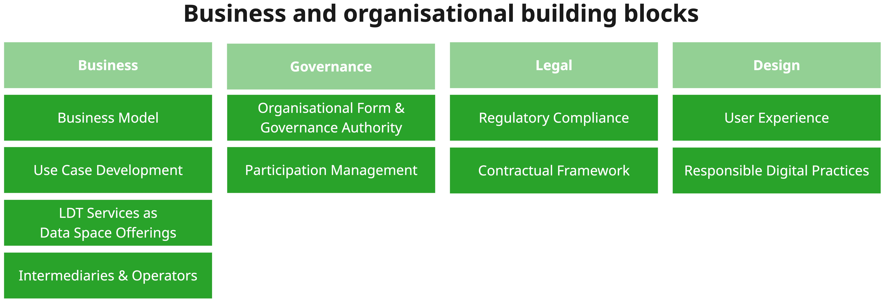
The Business pillar of LDTs frames the context for value creation, value capture and feasibility for sustaining the LDT beyond initial testing and piloting. This pillar of building blocks explores how to identify stakeholder incentives and structure data and service offerings. At its core, the business model should address the motives and strategic objectives of relevant stakeholders, ensure their alignment with offered data and services, foster multi-stakeholder data cooperations, and be sustainable in the long-run. This pillar includes the following blocks:
-
Business Model: This building block provides insight into establishing the value creation and value capture mechanisms, alongside other related business model elements (such as cost structures, revenue streams, funding models, public-private collaboration challenges...), for both the LDT Base and Core (for example, if based on a data space), and the central use case(s) the LDT enables.
-
Use Case Development: This building block shows how to identify, refine, implement and improve a use case.
-
LDT Services as Data Space Offerings: Whereas in data spaces, both data, data products and services are considered as data space offerings, in the context of LDTs, this building block emphasises the offering of LDT services from a business perspective and provides a strategy to develop and maintain them. More details in the DSSC blueprint v3, section Data Space Offerings.
-
Intermediaries and Operators: Intermediaries and operators may have a significant role in fostering data exchange among (data space) participants, providing essential functionalities, as well as value-added services. In multi-actor environments, intermediaries may also foster interoperability, with diverse technical and non-technical implementations.
In addition, the Governance pillar ensures that the operating model of a single LDT or its interconnection with other LDTs is aligned with its core purpose. It sets clear roles and responsibilities, rules, and processes, among others, to ensure trust among engaged stakeholders and beneficiaries, foster clear and transparent decision-making, and support operational compliance with relevant regulations and requirements. This pillar includes the following building blocks:
-
Organisational Form and Governance Authority: In case the LDT Base and Core are built on multi-stakeholder data cooperations, clarifying its organisational form (either as incorporated or unincorporated) may be useful. This building block provides guidance on the various types of entities stakeholders may establish, emphasises the governance authority (for example, setting the rules of the chosen data cooperation, defining the governance framework, ensuring compliance, and resolving conflicts, thereby fostering trust and data quality).
-
Participation Management: In case the LDT Base and Core require the participation of multiple actors, this building block helps to clarify how to identify potential participants and manage their onboarding and offboarding, emphasising the risks associated with poorly managed participation, including data governance challenges and reduced collaboration. The building block highlights the need for clear rules, inclusive governance, and regulatory compliance.
In addition to having clear and strong governance, the Legal pillar emphasises the necessity for ensuring regulatory compliance and a strong legal foundation for the LDT’s operations. It defines the following blocks:
-
Regulatory Compliance: An LDT is subject to both data and digital, sector-specific or other regulations, and as such, this building block indicates how to ensure regulatory compliance of the envisioned data cooperations, the use and sharing of data, and the provision of LDT services. It outlines actions to be undertaken by participants or potential policies that the governance authority shall consider. The building block is focusing on legal triggers, in other words, elements, criteria or events that have occurred in a particular context and signal that a specific legal framework must or should be applied.
-
Contractual Framework: While the governance framework sets out the principles, processes, standards, protocols, rules and practices that guide and regulate the governance, management and operations, those agreements also need a legal basis. This building block provides an overview of the types of legal agreements that are essential for data cooperations, categorising agreements according to their objectives, for example, institutional agreements, data sharing agreements, and service agreements. For each category of agreements, it highlights horizontal issues that are likely to emerge or take into account common regulations across all sectors (for example, the requirement of fairness in data contracts).
Finally, the LDT4SSC Blueprint defines a Design pillar with two essential building blocks which will influence how the LDTs are built, sustained and adopted, influencing all other business and organisational as well as technical building blocks, enabling the alignment of technological innovation with societal and environmental goals, fostering trust and long-term value for all users and citizens.
-
User Experience (UX): Whereas user interfaces for various LDT services, such as visualisation, analytics, simulations and so on, have a technical perspective, these also hold non-technical design choices to ensure usability, accessibility, and trust while maintaining system performance, monitored through clearly defined KPIs such as user adoption rates, task completion efficiency, and decision impact. As such, this building block emphasises the importance of a user-centric design of LDTs, including their monitoring, to align interface design with user needs, decision-making contexts, and cognitive capacities. Firstly, interfaces should provide clear and intuitive navigation, flexible data-layer management, and immediate visual feedback, supported by onboarding tools and training materials. Secondly, effective interfaces integrate spatial visualisation (3D models, overlays, linked charts, VR/XR) with analytical clarity and role-based customisation, enabling various types of users (planners, policymakers, citizens, and others) to explore both real-time and historical data through synchronised views and scenario-based simulations. Thirdly, users' visual and cognitive diversity should be considered and catered to, supporting accessibility (for example, WCAG compliance). In addition, transparency of data sources and data processing, including alignment with privacy-by-design principles (such as Gemini Principles), are essential to build user trust and inclusivity. Fourthly, co-design approaches such as actively involving stakeholders in early design and iterative testing ensure relevance, usability, and shared understanding of LDT concepts, as highlighted in studies such as BEAM (Ignatius et al., 2025) and FLOODTWIN (Frontiers, 2025). Finally, continuous UX evaluation should combine standardised questionnaires (for example, UEQ, SUS), task-based usability testing, cognitive load measures (for example, NASA-TLX), and usage analytics to monitor effectiveness and identify friction points.
-
Responsible Digital Practices: This building block refers to design principles that encourage environmentally sustainable digitalisation efforts, while building and deploying LDTs. Taking into consideration the increasing and transformative impact the digital sector has on the environment and society, this building block is designed to embed environmental sustainability, ethics, and social responsibility into the core of LDTs and its digital infrastructure. It aims to minimise the environmental footprint of digital technologies through measuring its impact (life cycle assessment, software-assisted), eco-design, energy efficiency, and circular economy practices throughout the lifecycle phases of the LDT, from design and development to decommissioning and end-of-life, including operations and maintenance.
The aforementioned building blocks are implemented in various ways, using specific assets, inter alia contracts and rulebooks, or specific methodologies and templates, inter alia the LDT4SSC Methodology, Data Cooperation Canvas, and/or various ecosystem design materials.
The business and organisational building blocks are further described in § 4.1 Business and organisational architecture, emphasising their connections and relevance for LDTs interoperability.
2.2. Technical building blocks
This section explains what technical pillars and building blocks are required to build an LDT. Figure 9 contains a graphical overview of these pillars and blocks, which we will discuss in detail next.
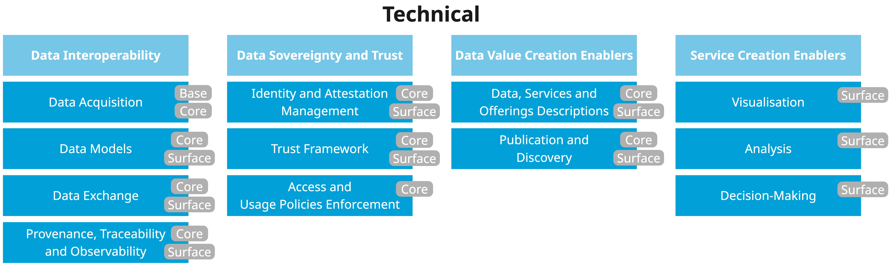
The Data Interoperability pillar contains the capabilities needed for data acquisition, data exchange, semantic models, data formats, and application interfaces. This also includes functionalities for provenance and traceability. This pillar has the following building blocks, which apply to interactions within a single LDT and between LDTs:
-
Data Models (Core and Surface): Capabilities to define and use shared semantics.
-
Data Exchange (Core and Surface): Capabilities relating to the actual exchange and sharing of data.
-
Provenance, Traceability & Observability (Core and Surface): Capabilities for tracking the data sharing process so it becomes traceable and can be checked for compliance purposes.
-
Data Acquisition (Base and Core): Capabilities to extract, transform, and load data from multiple data sources, while assuring data quality. This is a new LDT-specific building block, because the Data Model block only considers the semantics of then data, and the Data Exchange block only considers the exchange and sharing of data after the LDT has acquired it. The concrete capabilities are
-
Data extraction: Extra data from multiple data sources that might use different formats and data models.
-
Data transformation: Transform data to different data formats and data models.
-
Data loading: Load and store the data so that other components of the LDT can use it.
-
The Data Sovereignty and Trust pillar contains the capabilities needed for identifying components and assets that interact within an LDT and between LDTs. This allows establishing trust and the possibility of defining and enforcing policies for access and usage control. This pillar has the following building blocks:
-
Identity and Attestation Management (Core and Surface): Capabilities to manage identities and attestations of components to ensure the reliability and integrity of components' information.
-
Trust Framework (Core and Surface): Capabilities to verify that a component adheres to certain rules.
-
Access and Usage Policies Enforcement (Core): Capabilities to specify and enforce access and usage policies.
The Data Value Creation Enablers pillar contains the capabilities for enabling value creation on top of LDTs: providing metadata on data products and publishing them in catalogues. This pillar has the following building blocks:
-
Data, Services and Offering Descriptions (Core and Surface): Capabilities to describe data, services and offerings in a manner that will be understandable by any component that interacts with(in) LDTs.
-
Publication and Discovery (Core and Surface): Capabilities to publish the description of data, services and offerings so that they can be discovered by potential data users.
The Service Creation Enablers pillar contains the capabilities for enabling service creation on top of LDTs: ensuring accessibility and inclusive user experience (UX)/user interface (UI), developing and deploying AI models, and running simulations. This is a new LDT-specific pillar, because creating service is as important as the data itself. It’s based on the Value Creation Services building block of data spaces, which we don’t include in the Data Value Creation Enablers pillar for an LDT. The new Service Creation Enablers pillar has the following building blocks:
-
Visualisation (Surface): Capability to develop visualisations of the data while ensuring their accessibility and the inclusiveness of the UI.
-
Analysis (Surface): Capabilities to develop and deploy AI models, and to enable the exploration of dynamic behaviours and scenarios within LDTs. This supports testing of policies, systems, or interventions under different assumptions. This is a new LDT-specific building block due to the importance of AI and the consequences of its usage, and the importance of running simulations on an LDT’s data. The concrete capabilities are
-
AI model development: Develop and manage AI models on top of the LDT’s data.
-
AI model deployment: Deploy AI models, either developed by the LDT or by external parties, on top of the LDT’s data.
-
-
Decision-Making (Surface): Capability to support decision-making, such as planning, participation channels, and notifications. This is a new LDT-specific building block due to the importance of supporting decision-making when creating a service on top of an LDT.
3. Workflows
Once we have built an LDT, the LDT should support the following workflows: adding a new SLC to an existing LDT and discovering which SLCs work on an existing LDT. We include both technical steps, which are labelled starting with "T", and business and organisational steps, which are labelled starting with "BO". We present the workflows in a mostly sequential way, but it might be necessary that we revisit previous steps when we acquire new information, including requirements and restrictions.
3.1. Adding a new Surface-level component to an existing LDT
In this section, we describe the workflow for adding a new SLC to an existing LDT. We visualise this in Figure 10, where technical steps are blue with rounded corners and business and organisational steps are green with square corners.
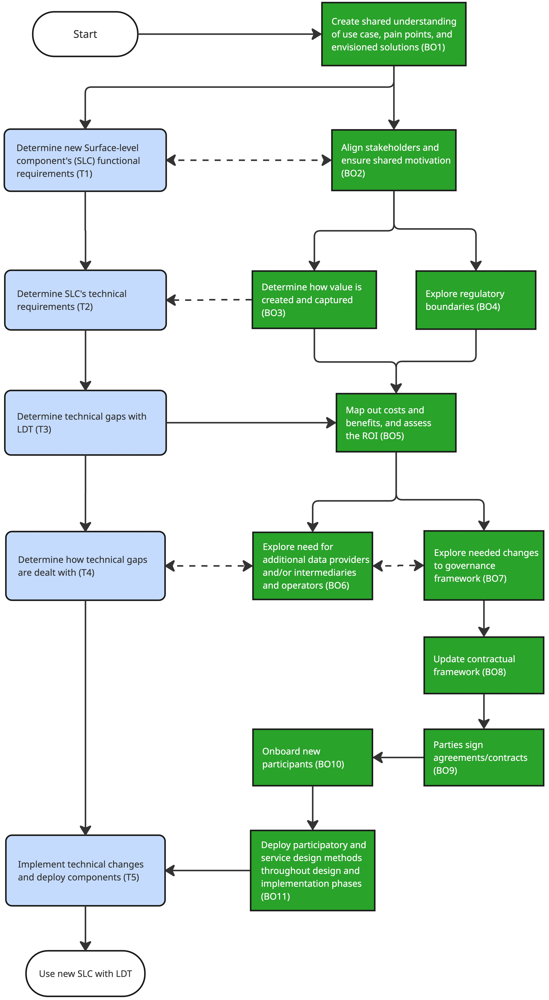
First, we create a shared understanding of the use, pain points, and envisioned solutions (with our key stakeholders) (BO1). Next, in parallel, we determine the functional requirements of the new SLC (T1) and align the stakeholders and ensure a shared motivation to develop the use case where the new SLC is needed (BO2). T1 and BO2 might influence each other, because the stakeholders need to support the selected SLC. After T1, we determine the SLC’s technical requirements (T2). After BO2, we, in parallel, should determine how value is created and captured (BO3), and explore regulatory boundaries (BO4) to explore the feasibility of adding a new SLC and justify the investments required. BO3 can influence the technical requirements of the SLC. Next, we determine the technical gaps between the SLC’s requirements and what the LDT currently offers (T3). We follow this up, in parallel, with mapping out the costs and benefits and assessing the return on investment (BO5); and determining how we will deal with the technical gaps (T4). BO5 leads us to exploring if we need additional data providers and/or intermediaries and operators (BO6), and if we need to make changes to the existing governance framework (BO7) or if it doesn’t exist yet, create one. BO7 might require us to update our contractual framework (BO8), which in turn might require us to make parties sign updated or newly established agreements and contracts (BO9).
BO6 and BO7 might influence each other, because, on the one side, the governance framework might affect the data providers and intermediaries we are allowed to interact with, and, on the other side, if we want to work with providers and intermediaries that don’t fit within the governance framework, we need to update the governance framework. BO6 and T4 might also influence each other, because, on the one hand, the technical gaps might influence which providers and intermediaries we need, and, on the other hand, the unavailability of certain providers and intermediaries might require additional actions to resolve a technical gap.
If there are new participants in the LDT, we need to onboard them (BO10). Next, we deploy the participatory and service design methods throughout the design and implementation phases (BO11), addressing the two design building blocks described in § 2.1 Business and organisational building blocks. We follow both T4 and BO11 by implementing the technical changes and deploying the components. Finally, we can start using the new SLC with our LDT and start creating the envisioned value for our beneficiaries.
Note that this process might not be straightforward, and we might need to go back to previous steps to adapt or validate specific details, either with respect to the technical aspects or the business and organisational aspects, or both.
3.2. Discovering which Surface-level components work on an existing LDT
In the previous workflow, we manually executed the steps T2 and T3, but it should be possible to automate these steps. This is the goal of this section’s workflow (see Figure 11).
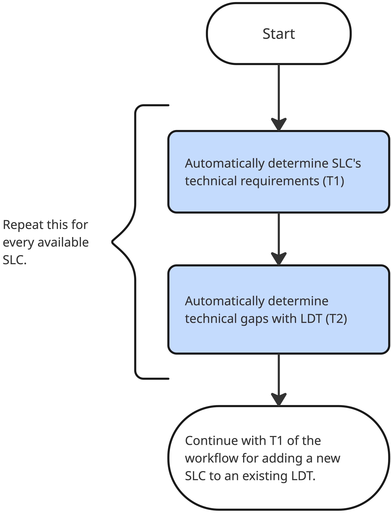
For each available SLC, especially those built for other SLCs, e execute 2 steps. First, we automatically determine the technical requirements to deploy the SLC (T1). Next, we automatically determine the gaps between these requirements and what the LDT offers (T2). Finally, we use these SLCs in the first workflow at T1. This doesn’t mean that we can skip T2 and T3 of this workflow because we still have to take into account the business and organisational aspects, such as legal checks and signing of necessary agreements or budgetary assessments, but it allows us to speed up the process.
4. Reference architectures
In this section, we discuss the business and organisational architecture, including how it aligns with the business and organisational building blocks. Next, we discuss the technical architecture, including how it aligns with the technical building blocks, and the standards and protocols that we recommend.
4.1. Business and organisational architecture
The business and organisational architecture of LDTs builds on the building blocks of § 2.1 Business and organisational building blocks. Figure 12 provides the schematic overview of the interrelations of various business and organisational building blocks, specific to developing and operating an LDT. Note that building blocks are not specific assets or components, as these are deployed based on particular implementation contexts. However, as the LDT4SSC project’s aim is to support the development of an LDT ecosystem, Figure 13 introduces further the business and organisational building blocks necessary for fostering the connections between various LDTs, and the sharing of data products and LDT services.
Figures 12 and 13 consist of five major clusters:
-
An LDT (dark grey), including data products and LDT services.
-
LDT ecosystem (light grey, only in Figure 12) refers to the overarching framework for connecting LDTs and sharing resources (data products and/or services) among them.
-
Participants in their specific roles (blue), emphasising especially data providers, data consumers, intermediaries/operators and/or a governance authority (even though there may be additional roles, defined by LDT’s governance framework). Note that these are not mutually exclusive, and participants may carry one or multiple roles. All participants must adhere to the governance framework, ensure regulatory compliance, and are expected to participate in the respective use cases. Note that single participants (legal bodies) have their own organisational form and business model, and their interests, rights and responsibilities must be accounted for when designing the data cooperation model.
-
Business and organisational building blocks (green) that are necessary either for the design, governance or operations of the LDT and/or LDT ecosystem.
-
Urban and community processes (yellow) layer emphasises the importance of integrating LDT services into specific urban and community processes, such as smart governance, administration, specific urban or community services or others. This fosters practical value creation and increases the relevance of LDTs in the respective local community, showing how LDTs help address local needs and achieve specific objectives.
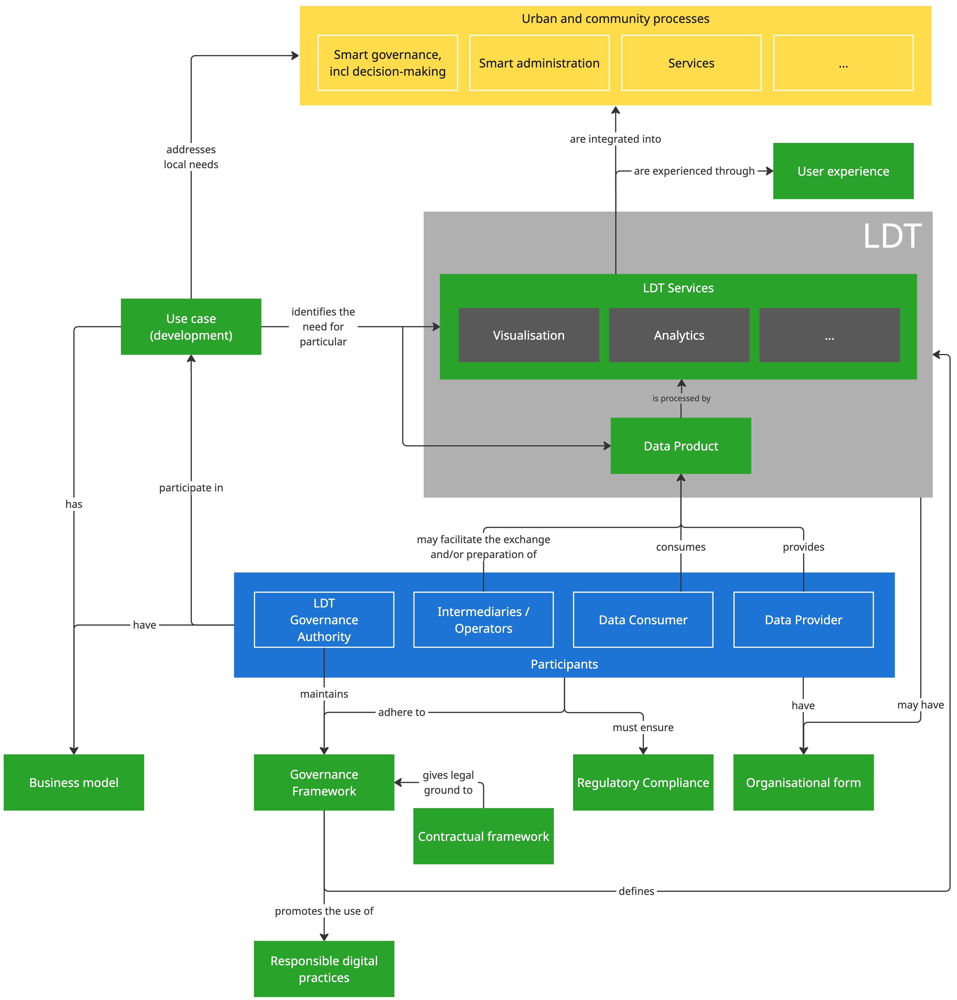
Following Figure 12, the development and use of an LDT is dependent on a specific use case(s), which identifies the need for specific LDT services and data products. That use case must address local needs and integrate the LDT into urban processes. In doing so, the LDT’s user experience should be carefully considered and monitored to foster adoption. To sustain the use of LDTs and the respective use cases, one needs to ensure a feasible business model (short- and long-term), which is aligned with the strategic business incentives of all engaged participants.
Various participants engage/participate in the use case in different ways:
-
The governance authority of an LDT maintains the governance framework, which defines the rules, processes, standards, and so on, of an LDT, including the promotion of responsible digital practices. All participants need to adhere to that governance framework to participate in the LDT development/operations and in the specific use case.
-
A data provider provides data products for the LDT, which are then consumed by data consumers (often the provider of the LDT services).
-
To support the integration of additional data sources, the builders and/or owners of the LDT may cooperate with intermediaries or operators, who may facilitate the exchange and/or preparation of the data products.
While collecting, sharing and processing data (as well as any other business activity), all participants must ensure regulatory compliance in their actions. Relatedly, the contractual framework will give a legal ground to the established governance framework and ensure legal certainty and alignment with various regulations.
Depending on whether the participants have an organisational form or not, data sharing and engagement in the LDT may vary (for example, whether individuals could engage with the LDT by providing data directly). Also, if the LDT is co-developed by multiple actors, it may be co-governed through a specific organisational form (either incorporated, such as an association, or unincorporated, such as a consortium or joint venture).
In addition to the perspective of necessary building blocks for the single LDT, Figure 13 provides an overview of the building blocks (and relationships between them) that shape how several LDTs connect with one another and exchange assets among themselves. LDTs may leverage the interoperability framework of data spaces and the guidelines from DSSC and DS4SSCC-DEP, as discussed in § 2 LDT building blocks based on DSSC & DS4SSCC-DEP building blocks.
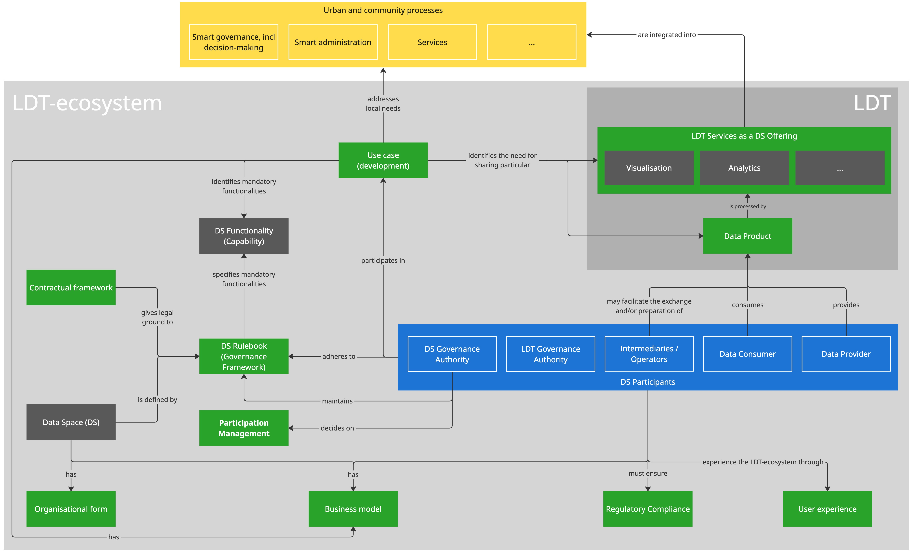
The central focus point is again on the use case, which identifies the need for sharing specific data products or LDT services. Furthermore, the use case identifies mandatory functionalities (capabilities) for the functioning of the LDT ecosystem (for example, exchange of assets, brokering, and so on) that may be provided by a data space. A data space is defined by the rulebook (essentially a documented governance framework), which includes a structured set of principles, processes, standards, protocols, rules and practices that guide and regulate the governance, management and operations within a data space to ensure effective and responsible leadership, control, and oversight. It also defines the functionalities the data space provides and the associated data space roles, including the data space governance authority and participants. The rulebook is maintained by a data space’s (DS) governance authority, which also decides on the participants' management, in other words, the onboarding, continuous facilitation of participants, and offboarding. Relatedly, LDT-ecosystem is not an intellectual construct - it has tangible interfaces through which users experience the ecosystem and the interactions within.
It’s worth noting that an operational data space (LDT ecosystem) also has a business model to sustain its activities and fulfil its purpose. It also takes an organisational form (incorporated or unincorporated), which influences several business and organisational considerations (such as what agreements/contracts should be established, what its decision-making processes will look like, and so on).
4.2. Technical architecture
The technical architecture expands the high-level overview of an LDT. It includes artefacts and components. Artefacts are structured pieces of information that are created, processed, exchanged, or consumed within an LDT. They are passive elements. Components are functional building blocks that perform operations on artefacts. They are active elements responsible for producing, transforming, managing, exchanging, or analysing these artefacts. First, in Table 1, we explain the artefacts of the architecture, including their names, descriptions, the high-level components they belong to, and the building blocks they are related to. Next, in Table 2, we do the same for the components of the architecture. Descriptions are intentionally technology-agnostic. Next, we describe how the data flows through the architecture, visualised in Figure 14, in § 4.2.1 Support different data models to § 4.2.4 Support for working with different AI models. Finally, we provide recommendations for standards and protocols in § 4.2.5 Standards and protocols. Note that this architecture focuses on the different artefacts, components, and their interactions. It doesn’t say anything about which parties deploy which components where.

|
Artefact |
High-level component |
Description |
Building Block |
|---|---|---|---|
|
Rich Data Model |
Data Acquisition |
This is a data model that represents all the data from a data source. |
Data models |
|
Common Data Model |
Data Management |
This is a data model used by the LDT Core and the SLCs. The word “common” refers to the fact that this model will only contain what is common between what the LDT Core offers and what an SLC needs. |
Data models |
|
Data Model Mappings |
Data Management |
These are rules to convert data using one data model to data using another data model. |
Data models |
|
Data, Service, and Offerings Descriptions |
Data Management, Visualisations, Decision-Making |
These are the details of the data, services, and offerings |
Data, service, and offerings descriptions |
|
Access and Usage Policies |
Data Management |
These are the details about permitted and prohibited access and usage actions over certain data, services, and offerings, as well as the obligations required to be met by the acting parties. |
Access and usage policy enforcement |
|
Rulebook |
Data Management |
This defines governance requirements and supports automated conformity assessment. |
Trust framework |
|
Accredited Trust Anchors and Trust Service Providers |
Data Management |
This is a listing of trust anchors and trust service providers (including revoked ones). |
Trust framework |
|
AI Model Descriptions |
Analysis |
These are the details of the datasets utilised, training versions, dependencies, and performance metrics such as accuracy and loss of AI models.
|
Data, service, and offerings descriptions |
|
Component |
High-level component |
Description |
Building Block |
|---|---|---|---|
|
Raw Data Sources |
Data Sources |
This is any data source, excluding data spaces. |
Data Acquisition |
|
Data Spaces |
Data Sources |
This is a federated environment where data is shared among trusted participants. |
Data Acquisition |
|
Data Space Connector |
Connectivity |
This enables an LDT to provide and consume data within a data space under governed, secure, and interoperable conditions. |
Data Acquisition, Data Management |
|
Extract, Transform, Load (ETL) |
Data Acquisition |
This is a data process that combines, cleans and organises data from multiple sources. |
Data Acquisition |
|
Data Storage |
Data Acquisition |
This is where the ETL stores existing data and where new data is stored that is generated by the SLCs. |
Data Management |
|
Data Model Publication |
Data Management |
This makes the data models available for querying. This includes (new) vocabularies. |
Data Models, Publication and Discovery |
|
Catalogue |
Data Management |
This makes the data, service, and offerings descriptions available for querying. |
Publication and Discovery |
|
Data Model Mediator |
Data Management |
This maps data from one data model to another data model. |
Data models |
|
Data Exchange Component |
Data Management |
This enables the actual sharing of data between a data provider and a data user. |
Data exchange, Access and Usage Policy Enforcement |
|
Observability Service |
Data Management |
This collects and stores provenance and traceability data. |
Provenance, Traceability, and Observability |
|
Discovery Service |
Connectivity |
This allows discovering which SLCs work with which LDTs. |
Publication and Discovery |
|
Rulebook Publication |
Data Management |
This makes the rulebook available for querying. |
Trust Framework, Publication and Discovery |
|
Trust Services |
Connectivity |
They validate attestations and declarations against the conformity assessment criteria defined in the Rulebook. They can also perform conformity assessments by validating declarations and certifications against the conformity schema. These services combine organisational checks and automated verification processes, issuing results under the authority of the Governance Authority. |
Trust Framework, Identity and Attestation Management |
|
Trust Anchors and Trust Service Providers Publication |
Data Management |
This makes the list of trust anchors and trust service providers available for querying. |
Trust Framework, Publication and Discovery |
|
Visualisation |
Visualisations |
This provides dashboards, spatial and temporal views, and interactive interfaces that enable end-users to explore, interpret, and interact with the outputs of services and analyses within an LDT. |
Visualisation |
|
Simulation |
Analysis |
This enables the exploration of dynamic behaviours and scenarios within LDTs. This supports testing of policies, systems, or interventions under different assumptions. |
Analysis |
|
AI Model Catalogue |
Analysis |
This tracks trained AI models and their associated metadata, including the datasets utilised, training versions, dependencies, and performance metrics such as accuracy and loss. |
Publication and Discovery |
|
AI Model Manager |
Analysis |
This manages each phase of an AI model's lifecycle, including training, deployment, and updates. |
Analysis |
|
AI Model Provider |
Analysis |
This deploys AI models as inference interfaces and manages the models' state, deletion, and publication. |
Analysis |
|
AI Model Runner |
Analysis |
This runs the AI models, as instructed by the AI Model Provider. |
Analysis |
|
Decision Support Channels |
Decision-Making |
This enables the engagement of end-users (citizens or decision-makers) and supports participatory planning processes. |
Decision-Making |
|
Notifications |
Decision-Making |
This pushes notifications to end-users. |
Decision-Making |
|
Application Composition |
Decision-Making |
This allows end-users to wire together components from other high-level components (for example, dashboards, scenario builders, and analysis flows) to contribute to use cases. |
Decision-Making |
When reading the data as an SLC, it flows through the architecture from the data sources to the SLCs, depicted by the arrows in Figure 14. Firstly, note that we didn’t include every possible interaction/arrow to keep the figure as readable as possible. Secondly, if an SLC writes data back to the data sources or any of the components in between, then the arrows are reversed.
Raw data goes from its data source, called Raw Data Source, to the ETL (arrow 1a). This does not include data from a data space. Data coming from a Data Space goes through a Data Space Connector (arrow 1b) before arriving at the ETL (arrow 1c). The ETL extracts, loads, and transforms the data based on a Rich Data Model that captures as much knowledge from the data sources as possible. Next, data flows from the ETL to the Data Storage (arrows 2a and 2b). The Data Model Mediator uses Data Model Mappings to map data (arrow 3) in a Rich Data Model to a Common Data Model. The mapped data flows to the Data Exchange Component (arrow 4). The Data Exchange Component uses the Trust Services (arrow 6) and the Access and Usage Policies to determine what data is shared with what parties and for what purposes.
Next, the data flows from the Data Exchange Component to the Visualisations, Analysis, and Decision-Making (arrows 8a, 8b, 8c, and 8d). This can happen via different interfaces, for example, API 1 (arrow 8a and 8d) and API X (Arrow 8c and 8d). The shared data is in the Common Data Model that is required by the requesting SLC. The SLCs can access the data models through the Data Model Publication’s API. The Discovery Service uses the details about the data, data models, AI models, services, and offerings (arrows 10a, 10b, 11a, 11b and 11c).
The data can also flow from the Data Model Mediator to the Data Space Connector (arrow 14). From there, it can flow to the data space participants. Note that in Figure 14, we use 2 separate instances of the Data Space Connector for clarity, but during deployment, this can be a single instance.
The AI Model Manager stores the details of the AI Data Model in the AI Model Registry (arrow 12a). The AI Model Provider uses these details (arrow 12b) to run the models on the AI Model Runner (arrow 12c). The latter uses the data made available through the Data Exchange Component (arrow 8b). Afterwards, a Decision-Making tool uses the runner’s output (arrow 15). When accessing data, SLCs use the Trust Services (arrows 13a and 13b) to authenticate the users. To support provenance and traceability, the necessary information flows from different components to the Observability Service (arrows 5a and 5b). Note that in Figure 14, we only added arrows between two components and the Observability Service for clarity. It’s possible to let the Observability Service collect data from other components as well.
Similar to the AI Model Runner, the Simulation can use the data (arrow 8c). Afterwards, the results of the Simulation can flow, for example, to a Visualisation (arrow 9b) or a Decision-Making tool (arrow 9a).
The Data Exchange Component and SLCs use a Contract Negotiation API that allows them to offer data, along with policies, to a data consumer that requests data (arrow 7). This happens before data flows from the Data Exchange Components to the SLCs.
The architecture applies the shift-left data paradigm to prevent bad data proliferation, storage, and compute needs in downstream systems. It achieves this by processing the data as close to the data sources as possible instead of requiring the SLCs to do that. Specifically, the Data Acquisition and Data Management components make sure
-
the data is correctly semantically modelled, while maintaining the flexibility to map the data to a different data model when needed, and
-
the data can be exchanged through different (non-)streaming interfaces.
In § 4.2.1 Support different data models, § 4.2.2 Support different data exchange types, and § 4.2.3 Support for the usage of data from different LDTs, we elaborate on how the architecture behaves during specific scenarios. In § 4.2.4 Support for working with different AI models, we explain the recommended standards and protocols for the artefacts and the interaction between components.
4.2.1. Support different data models
Support for different SLCs using different data models is achieved in the Data Management component by using the Data Model Mediator. After the data from the different data sources is materialised using their corresponding rich data model in the Data Acquisition component, the Data Model Mediator maps the data to one of the common data models. The mediator does this by using the corresponding data model mappings. The LDT can support new rich and common data models by adding mappings for the relevant models. Consequently, the LDT supports semantic interoperability.
In Figure 15, we have an example with two Rich Data Models, two Common Data Models, and two Visualisations. The Data Acquisition component materialises the data from a Raw Data Source using Rich Data Model 1 (arrow 1a) and data from a Data Space using Rich Data Model 2 (arrows 1b and 1c). Next, the data goes to the Data Storage (arrows 2a and 2b) and then to the Data Model Mediator (arrow 3). The mediator maps the resulting data to either the Common Data Model 1 (arrow 4a), which is used by Visualisation 1 (arrow 5a), or the Common Data Model 2 (arrow 4b), which is used by Visualisation 2 (arrow 5b). Note that we kept only the relevant components needed for our explanation compared to Figure 4.2.
Also, Figure 15 highlights how interoperability between different data sources and SLCs is achieved through the use of multiple data models and their mappings, but it doesn’t provide an exhaustive representation of all possible data modelling and transformation patterns and deployments.

4.2.2. Support different data exchange types
Support for different SLCs using different data exchange types is achieved in the Data Management component by using the Data Exchange Component. After the data enters the Data Exchange Component from the Data Model Mediator, the Data Exchange Component offers it to the different SLCs through the necessary interfaces. Note that supporting different data exchange types contributes to an LDT’s interoperability, but it doesn’t contribute to the semantic interoperability. The LDT does this through the Data Model Mediator (see § 4.2.1 Support different data models).
In Figure 16, the Data Exchange Component has two interfaces: API 1 and API 2. There are two Visualisations: one that gets the data via API 1 (arrow 1) and another that gets the data via API 2 (arrow 2).

4.2.3. Support for the usage of data from different LDTs
The Data Space Connector in one LDT’s Data Acquisition component and the Data Space Connector in the other LDT’s Data Management component allow support for sharing data between those LDTs. After the data leaves the Data Model Mediator, an LDT’s Data Space Connector shares the data with the other LDT’s Data Space Connector. Afterwards, the latter LDT processes the data like the data from a Raw Data Source. In Figure 17, the data from LDT 2 flows to its Data Space Connector (arrow 1). Next, it flows to the Data Space Connector of LDT 1 (arrow 2). Finally, the data is processed by LDT 1’s ETL (arrow 3).
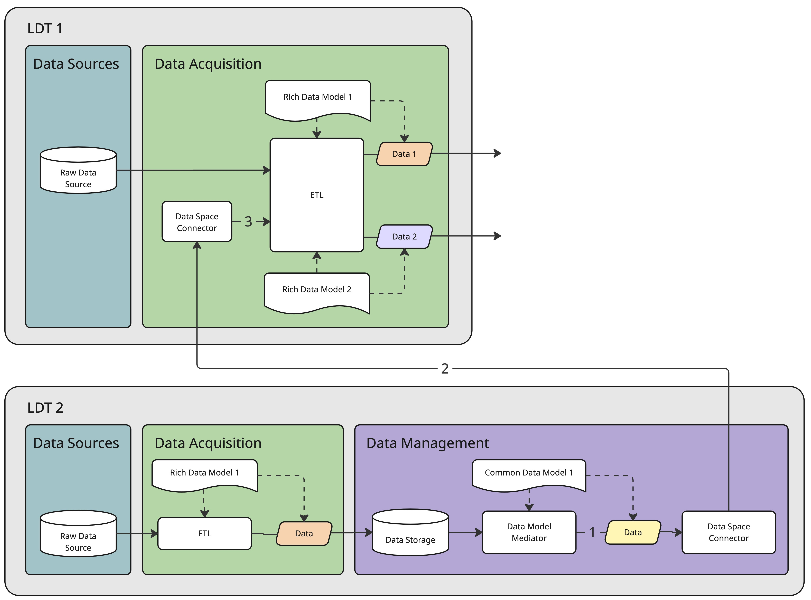
4.2.4. Support for working with different AI models
The AI model manager, AI model catalogue, AI model provider, and AI model runner, which are part of the Analysis component, support working with different AI models. The manager updates a model’s information in the catalogue. This allows the provider to query the necessary information about a model to deploy it on the runner. This setup allows running different models at the same time, but also different versions of the same model. In Figure 18, the manager manages the lifecycle of AI model 1 (top-left diagram). It stores the information about the model, including its versions, in the catalogue (top-right diagram, arrow 1). The provider queries the second version of the AI model 1’s information from the catalogue (bottom-left diagram, arrow 2) and deploys it on the runner (bottom-left diagram, arrow 3). Next to this model, the provider also deploys the third version of AI model 2 (bottom-right diagram, arrow 3).
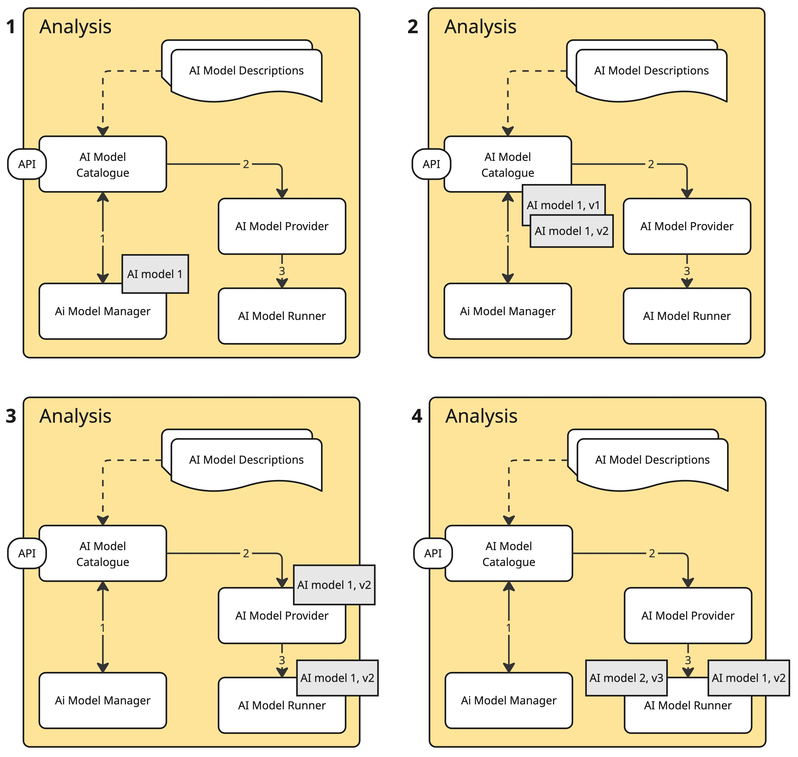
4.2.5. Standards and protocols
In this section, we list the recommended standards and protocols for the artefacts and the interactions between the components. We based ourselves on the previous deliverables D3.7 Technical Resources for pilots (Work Strand 1) and D3.8 Technical Resources for pilots (Work Strands 1, 2 & 3), the DSSC Blueprint v3, and the DS4SSCC-DEP Blueprint. We focus only on RDF-based and NGSI-LD systems to facilitate the interoperability within an LDT and between LDTs, as described in Section 4.2.5 of D3.8.
4.2.5.1. Artefacts
In this section, we describe the standards and protocols for data, vocabularies, data models, data model mappings, services, and offerings descriptions, access and usage policies, provenance and traceability, and AI model descriptions.
4.2.5.1.1. RDF-based systems
Data: Resource Description Framework (RDF). RDF is a framework for representing information on the Web. Its core structure is a set of triples, each consisting of a subject, a predicate and an object. A set of such triples is called an RDF graph.Vocabularies: RDF Schema (RDFS) and Web Ontology Language (OWL). RDF Schema provides a data-modelling vocabulary for RDF data. OWL is a language designed to represent rich and complex knowledge about things, groups of things, and relations between things.
Data Models: Shapes Constraint Language (SHACL). This is a language for validating RDF against a set of conditions. We provide these conditions as shapes and other constructs expressed via RDF. As we use SHACL shapes to validate that data satisfy a set of conditions, these shapes can also be viewed as a description of the data that satisfy these conditions. Such descriptions may be used for a variety of purposes besides validation, including user interface building, code generation and data integration through shared data models.
4.2.5.1.2. NGSI-LD-based systems
Data: NGSI-LD Information Model. It builds upon JSON-LD and RDF principles to represent entities, properties, and relationships as Linked Data, allowing information to be read by machines and interoperable across domains.
Vocabularies and Data Models: Smart Data Models (SDM) and JSON Schema. SDM is an initiative that develops open, reusable data schemas aligned with NGSI-LD. It provides harmonised ontologies according to a specific domain, such as mobility, energy, or environment. JSON Schema is a declarative language for defining structure and constraints for JSON data. SDM uses it to describe its data models.
4.2.5.1.3. System-independent
Data Model Mappings: Notation3 (N3), ]SPARQL Query Language](https://www.w3.org/TR/sparql11-query/) (SPARQL), and RDF Mapping Language (RML). N3 is a rule language for natively building and reasoning over semantic knowledge graphs. Since N3 is a superset of RDF, there is no impedance mismatch between N3 and Knowledge Graphs. We can use N3 to map RDF data using one data model to data using another data model by defining rules. We can find an example on the Eyeling N3 Playground. We can use SPARQL to express queries across diverse data sources, whether the data is stored natively as RDF or viewed as RDF via middleware. SPARQL can be used to map RDF data by using the CONSTRUCT query form. We can try an example via Comunica. RML is a mapping language defined to express mapping rules from heterogeneous data structures and serialisations to the RDF data model. Similar to N3, we can use RML to map RDF-based data (available as a result of, for example, a SPARQL query) by defining rules. We can try an example on the RML Playground.
Data, Services, and Offerings Descriptions: Data Catalog Vocabulary (DCAT) and DCAT-AP. DCAT provides the baseline vocabulary for describing datasets and related resources in a structured, machine-readable manner. DCAT-AP is an application profile of DCAT with mandatory fields and controlled vocabularies, ensuring that metadata can be aggregated across Europe, such as the official portal for European data. It’s extensible to reflect specific domains. It also contains the descriptions of the endpoints where others can find the rulebook, trust anchors, trust service providers, data models, and AI model descriptions.
Access and Usage Policies: Open Digital Rights Language (ODRL). This is a policy expression language that provides a flexible and interoperable information model, vocabulary, and encoding mechanisms for representing statements about the usage of content and services. Policies are used to represent permitted and prohibited actions over a certain asset, as well as the obligations required to be met by stakeholders. In addition, policies may be limited by constraints (for example, temporal or spatial constraints), and duties (for example, payments) may be imposed on permissions.
Provenance and Traceability: The PROV Ontology (PROV-O). It provides a set of classes, properties, and restrictions that can be used to represent and interchange provenance information generated in different systems and under different contexts. It can also be specialised to create new classes and properties to model provenance information for different applications and domains.
Note that, to the best of our knowledge, there is no standard yet for describing a rulebook and AI models in a machine-readable way.
4.2.5.2. Interaction between components
In this section, we explain how the different components interact. If a specific interaction between two components is not discussed, then it is very use-case dependent, which is out of scope of the blueprint. For example, how data sources interact with the ETL is very use-case dependent because it depends on the volume of the data, how often it changes, and whether it’s streaming data or not. Nonetheless, we can find suggestions in the deliverables D3.7 Technical Resources for pilots (Work Strand 1) and D3.8 Technical Resources for pilots (Work Strands 1, 2 and 3).
The interactions between components can be understood as a sequence of steps that enable data discovery, data access, secure exchange, and supporting SLCs.
Discovery interactions enable consumers to discover available datasets and SLCs. The Catalogue (arrows 10b, 11a, 11b, and 11c) is a crucial component in these interactions. For this component, we suggest the Dataspace Protocol - Catalog Protocol. It defines how a catalogue is requested from a catalogue service by a consumer using an abstract Message exchange format. The Catalog Protocol reuses properties from the DCAT and ODRL vocabularies with restrictions defined in the protocol.
Negotiation interactions define how access to data is agreed between participants. The Data Exchange Component and SLCs (arrow 7) are crucial components in these interactions. For these components, we suggest the Dataspace Protocol - Contract Negotiation Protocol. It defines how a data provider offers data, along with policies, to a data consumer that requests data.
Data exchange interactions enable the actual sharing of data between participants once agreements are in place. The Data Space Connector is a crucial component when sharing data through a data space. For this component, we suggest the Dataspace Protocol. It is a specification designed to facilitate interoperable data sharing between entities governed by usage control and based on Web technologies. This specification defines the schemas and protocols required for entities to publish data, negotiate agreements, and access data as part of a data space.
Publication and management interactions support the exposure and maintenance of shared artefacts. Data Model Publication, Rulebook Publication, and Observability Service are the related components for these interactions. For these components, we suggest an HTTP API. The HTTP methods are enough to make data models, rulebooks, and provenance and traceability data queryable (GET) and updatable (POST, PUT, and DELETE).
Trust and identity interactions establish trust between participants. Trust Services is a crucial component for these interactions. For this component, we suggest W3C Verifiable Credentials (VC), W3C Decentralized Identifiers (DIDs), OpenID for Verifiable Credentials (OIDC4VC), and Eclipse Dataspace Decentralized Claims Protocol (DCP). VC provides an interoperable model for expressing digital credentials. We can use it for attestations in a machine-readable format. DIDs are globally unique and verifiable identifiers. They allow organisations, natural persons, and machines to be securely identified across domains. OIDC4VC and DCP are two complementary protocols for credential exchange. OIDC4VC extends OpenID Connect and OAuth2 flows, enabling secure and interoperable credential issuance and presentation in line with existing identity and access management practices. DCP, developed under the Eclipse Dataspace Foundation, provides a governance-aware protocol overlay for exchanging and verifying claims without relying on centralised intermediaries.
Notification interactions enable the propagation of events and updates between components. Notifications is a crucial component for these interactions. For this component, we suggest Linked Data Notifications (LDN) and Common Alerting Protocol (CAP). LDN is a protocol that describes how servers (receivers) can have messages pushed to them by applications (senders), as well as how other applications (consumers) may retrieve those messages. Messages are expressed in RDF and can contain any data. CAP is an XML-based data format for exchanging public warnings and emergencies between alerting technologies. CAP increases warning effectiveness and simplifies the task of activating a warning for responsible officials. It allows LDTs to deliver notifications to end-users in a standardised manner.
Note that some interactions are not standardised, such as the publication of Trust Anchors and Trust Service Providers and AI components. However, there are efforts that we can build on, such as the Gaia-X Registry, the EBSI Trusted Issuers Registry, and the Open Inference Protocol.
5. Workflows using reference architectures
In this chapter, we discuss how the business and organisational architecture and technical architecture support the workflows. First, we discuss the workflow for adding a new SLC to an existing LDT. Next, we discuss the workflow for discovering which SLCs work on an existing LDT.
5.1. Adding a new Surface-level component to an existing LDT
The goal of this workflow is to add a new SLC to an existing LDT. First, we discuss how the technical steps T1-T5 are supported by the technical architecture while minimising the integration effort. Next, we discuss how the business and organisational steps BO1-BO11 are supported by the business and organisational architecture.
We cover T1 in the technical architecture because we can add new Visualisations, AI models, Simulations, and Decision-Making tools on top of an LDT to implement a service. There are no functional limitations on how many of these we can add and how they work together and share data with each other.
We cover T2 because the SLCs publish their details through a Catalogue. This includes, for example, what type of data they need to function and through which interface the data should be exchanged.
We cover T3 and T4 because both the LDTs and the SLCs publish their details through a Catalogue. We can then compare these details to determine where the technical gaps are. For example, does the LDT offer the interface that the SLC requires? Additionally, we reduce the number of technical gaps through the design of the architecture. The Data Exchange Component offers a single point where we add new interfaces, avoiding changes in other components. The Data Model Mediator offers a single point where we add new Data Models, avoiding any changes to how the data is handled during the data acquisition. The Data Space Connector offers a single point where we read and write data to a data space in a standard way, reducing the changes that are needed to incorporate new data.
The required changes and effort of T5 depend on the decisions made in T1-T4. Because of the different components supporting T1-T4 and the architecture’s overall design, these changes and efforts are only applicable to a limited number of components, without any architectural changes.
The input from Use case development and Urban services supports BO1. The discussions about a new SLC with the Participants support BO2 and BO3. These Participants must also ensure Regulatory Compliance, which supports BO4. Organisational participants have a Business model that is also dependent on the use case, which affects BO5. We might also need to change or add new Participants when we need new data providers, intermediaries or operators, which is determined by BO6. These changes might affect the Governance Framework, as determined by BO7, which, in turn, might affect the Contractual Framework (BO8), leading to the Participants signing new agreements and contracts (BO9), and being onboarded (BO10) as described in the Governance Framework. Throughout the design and implementation phases of adding a new SLC to the LDT, deploy participatory and service design methods (BO11) addressing responsible digital practices, to ensure sustainable and human-centric implementation of the LDT.
5.2. Discovering which Surface-level components work on an existing LDT
The goal of this workflow is to automate the technical requirements of an SLC (T1) and its technical gaps with an existing LDT (T2). We cover T1 because the Discovery Service can query the SLCs' details through their corresponding Catalogues. We cover T2 because the Discovery Service can compare these details with the details of the LDT, which are also published through a Catalogue.
6. How to build an LDT
In this chapter, we discuss how we can build an LDT based on the reference architectures, following the LDT4SSC Methodology (see Figure 19. First, we discuss how to explore and validate an LDT as a solution. Next, we discuss how to define and implement an LDT. Note that participatory, user-centred, and service design methods are used throughout the 4 steps.
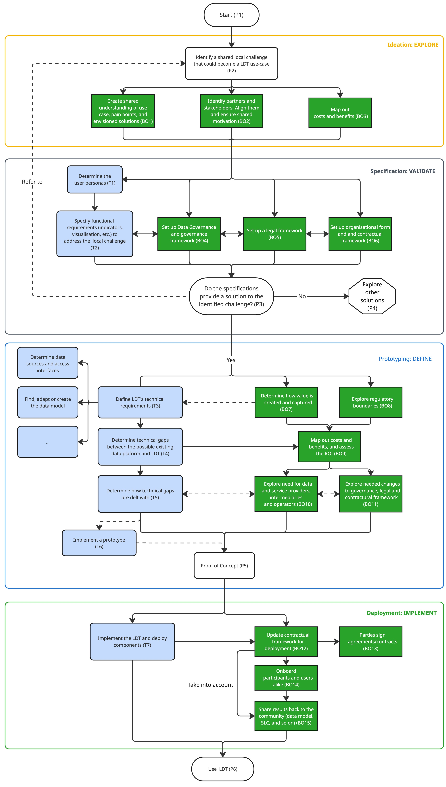
6.1. Explore and validate
This stage of building an LDT refers to the EXPLORE and VALIDATE steps of the LDT4SSC Methodology (see Figure 19). Once we identify a shared local challenge that could become an LDT use case, the objectives of the EXPLORE step are to
-
Identify partners to build the LDT with, as well as the stakeholders of the use case, to align them and ensure shared motivation (BO2);
-
Create a shared understanding of the use case, its pain points, purpose and envisioned solutions and have clear project objectives and alignment with public policy goals (with our key stakeholders) (BO1);
-
Map out costs and benefits that will then guide decision-making across economic, social and environmental dimensions (BO3).
Following this first step comes the VALIDATE step, where we build the specifications for the LDT. It provides the link between the vision that emerges from the ideation and the actual implementation of the project. On the technical side, the goal of this step is to specify functional requirements (indicators, visualisations, and so on) to address the local challenge (T2). We must do this with a user-centric and needs-based approach by determining user-personas, for instance (T1). On the non-technical side, the objective is to
-
Set up Data Governance and governance framework inventorying data, its lifecycle and its multi-stakeholder governance scheme (BO4);
-
Set up a legal framework that takes into account the regulatory constraints (BO5) and;
-
Set up the organisational form and the supporting contractual framework to initiate the building of the LDT (legal clauses) (BO6).
This step offers the LDT a strong legal and governance base to be built on.
Once we’ve performed these two steps and the resulting specifications provide a solution to the identified local challenge, and the balance between the cost and benefits is positive, we can move on to defining and implementing the LDT.
6.2. Define and implement
In this section, we discuss how to define and implement an LDT after having discussed how to explore and validate it as a solution. This stage of building an LDT refers to the DEFINE and IMPLEMENT steps of the LDT4SSC Methodology. We visualise this in Figure 19, where technical steps are blue with rounded corners and business and organisational steps are green with square corners.
After the EXPLORE and VALIDATE steps, we determine the LDT’s technical requirements (T3) to make the functional requirements (T2) a reality. To do this, we refer to § 6.2.1 How to build a Data Acquisition component to § 6.2.6 How to build Visualisations, which contain recommendations for tools that implement one or more features of the components. Note that, to the best of our knowledge, for some components, there are no tools available (yet) that implement one or more of their features. It’s at this stage that we find, adapt or create data models for semantic interoperability. In parallel, we should determine how value is created and captured (BO8) and explore regulatory boundaries (BO9). We might need to do T3 with a service provider, which will impact the contractual and government framework (BO11).
Next, we determine the technical gaps between the LDT’s technical requirements and what the possibly already existing data platform (SIG, BIM, data dashboards, and so on) offers and the data available (T4). We follow this up, in parallel, with mapping out the costs and benefits and assessing the return on investment, building on the initial mapping (BO3) and recording all relevant baseline data. We then determine how we will deal with the technical gaps (T5). BO10 leads us to exploring if we need data providers and/or intermediaries and operators (BO6), and if we need to make changes to the existing initial governance and/or legal and contractual frameworks (BO11). BO10 and BO11 might influence each other, because, on the one side, the governance framework might affect the data providers and intermediaries we are allowed to interact with, and, on the other side, if we want to work with providers and intermediaries that don’t fit within the governance framework, we need to update the governance framework. BO10 and T5 might also influence each other, because, on the one hand, the technical gaps might influence which providers and intermediaries we need, and, on the other hand, the unavailability of certain providers and intermediaries might require additional actions to resolve a technical gap. Once this is done, we can build a prototype of the LDT (T6) and test it with users, making the process agile and this step tangible. The feedback we gather during these tests might require us to revisit previous elements from the EXPLORE and DEFINE steps to integrate the needed changes. Once the PROTOTYPE step is over, we can move on to the real-scale deployment in the IMPLEMENT step. We follow T4 by implementing and deploying the technical components. In parallel, we adapt the contractual framework to include the contractual arrangements for deployment (maintenance, security, and so on) (BO12), which requires parties to sign new agreements and/or contracts (BO13). This contractual framework must enable the sharing of results (data models, SLCs, and so on) back to the community and the replicability of the LDT (BO15). We need to onboard the users and participants alike in the LDT (BO14). Finally, we can start using the LDT (P6) and start creating the envisioned value for our beneficiaries. Note that this process might not be straightforward, and we might need to go back to previous steps to adapt or validate specific details, either with respect to the technical aspects or the business and organisational aspects, or both. In the following sections, § 6.2.1 How to build a Data Acquisition component to § 6.2.6 How to build Visualisations, we provide a non-exhaustive overview of tools we can use to implement the different components of an LDT. They are illustrative examples to support implementation choices, rather than as prescriptive solutions. We grouped the tools according to the components they support, and may implement all or only part of the required functionalities. In practice, multiple tools may be combined to implement a single component.
6.2.1. How to build a Data Acquisition component
In this section, we list the different tools that we can use for the implementation of the components of the Data Acquisition component of an LDT in Table 3. The table contains the name of each tool, linked to its website, a description, and the component of which the tool (partly) implements the features.
| Tool | Description | Component |
|---|---|---|
| Apache Kafka | It is a distributed event streaming platform for high-throughput data pipelines. It supports real-time ingestion and dissemination of LDT data. | ETL |
| Redpanda | It is a Kafka-compatible event streaming platform. It provides an alternative runtime for event-driven LDT architectures. | ETL |
| Apache Pulsar | It is a distributed messaging and streaming platform with multi-tenant support. It can be used to scale event-based LDT ingestion and analytics. | ETL |
| Debezium | It is a change data capture platform that streams row-level changes from databases into event streams in real time. It enables existing operational databases to be connected to the LDT without intrusive modifications, allowing updates in source systems to be reflected continuously in ingestion pipelines. | ETL |
| Kafka Connect | It is a framework for building and running reusable connectors that move data between Kafka and external systems such as databases, file systems, or APIs. It provides a standardised mechanism to integrate data sources and sinks into event-driven ingestion pipelines. | ETL |
| Comunica | It is a knowledge graph querying framework. It uses flexible SPARQL and GraphQL over decentralised RDF on the web. | ETL |
| RML.io | It allows for generating knowledge graphs from both static and dynamic data sources, including relational databases, APIs, files, and data streams. | ETL |
| LinkedPipes ETL | It allows the designing of pipelines, defined data transformation processes consisting of interconnected components. | ETL |
| EU LDT Data Platform | This component of the EU LDT Toolbox allows municipalities to connect their LDTs with their databases and sensors, integrating data in standard formats and giving it context. | ETL |
6.2.2. How to build a Data Management component
In this section, we list the different tools that we can use for the implementation of the components of the Data Management component of an LDT in Table 4. The table contains the name of each tool, linked to its website, a description, whether it’s intended to be used with RDF-based or NGSI-LD-based systems, and the components of which the tool (partly) implements the features.
| Tool | Description | RDF/NGSI-LD | Component |
|---|---|---|---|
| PostgreSQL | It is a relational database for structured data persistence. It commonly backs context brokers and supports LDT state storage. Its capabilities are enhanced by the geospatial analysis library PostGIS and the time-series analysis library TimescaleDB. | N/A | Data Storage |
| MongoDB | It is a document-oriented database for flexible data models. It can store semi-structured data used by LDT services. | N/A | Data Storage |
| LDES | Linked Data Event Streams (LDES) is an initiative to help data publishers find a balance between publishing data through an as-complete-as-possible set of querying APIs and providing a simple data dump. They propose an event stream as the base API, and want to make it as lightweight as possible to host one. | RDF | Data Storage |
| LDF | Linked Data Fragments (LDF) provides lightweight, uniform interfaces that let query workloads for linked data be distributed between clients and servers. | RDF | Data Storage |
| Stardog | It is a knowledge graph platform, with support for SPARQL, that enables the management, querying, virtualisation, inferring, constraining, and learning of data. | RDF | Data Storage |
| Apache Jena Fuseki | It is a SPARQL server that Fuseki provides the SPARQL 1.1 protocols for query and update, as well as the SPARQL Graph Store protocol. It is integrated with TDB to provide a robust, transactional, persistent storage layer. | RDF | Data Storage |
| Virtuoso | It is a platform for creating and managing semantically harmonised databases, knowledge bases/graphs, filesystems, and APIs that are loosely coupled with AI Agents, Large Language Models, and other client environments. | RDF | Data Storage |
| EU LDT Data Platform |
This component of the EU LDT Toolbox allows municipalities to connect their LDTs with their databases and sensors, integrating data in standard formats and giving it context. | N/A | Data Storage |
| Stellio Context Broker | It is an open-source NGSI-LD-compliant context broker. It enables management of entities, relationships, and subscriptions. It is built around a Kafka message broker, embeds a PostgreSQL database for context management, with enhanced timeseries (TimescaleDB) and geospatial (PostGIS) capabilities. It is built on a Spring Boot microservices architecture. It embeds an optional Keycloak connection and security API, allowing fine-grained access definition and control to the NGSI-LD entities, based on ODRL definitions. Grafana is integrated for monitoring and alerting purposes. | NGSI-LD | Data Exchange Component, Data Model Mediator |
| Scorpio Broker | It is an open-source NGSI-LD-compliant context broker. It integrates well with FIWARE components to enable cross-domain context management. It relies on PostgreSQL database management and Apache Kafka (with Zookeeper) for communication and notifications. It is built on a Spring Boot microservices architecture, and may be complemented by Keycloak for identity and access management, and Grafana or Kibana for monitoring and visualisation. | NGSI-LD | Data Exchange Component, Data Model Mediator |
| Orion-LD | It is an open-source NGSI-LD-compliant context broker. It supports Linked Data entities, JSON-LD serialisation, and NGSI-LD API operations. It uses MongoDB as primary data storage. It can be complemented by Keycloak for authentication, and Cygnus or Kafka for data persistence. | NGSI-LD | Data Exchange Component, Data Model Mediator |
| LDES | Linked Data Event Streams (LDES) is an initiative to help data publishers find a balance between publishing data through an as-complete-as-possible set of querying APIs and providing a simple data dump. They propose an event stream as the base API, and want to make it as lightweight as possible to host one. | RDF | Data Exchange Component |
| LDF | Linked Data Fragments (LDF) provides lightweight, uniform interfaces that let query workloads for linked data be distributed between clients and servers. | RDF | Data Exchange Component |
| Stardog | It is a knowledge graph platform, with support for SPARQL, that enables the management, querying, virtualisation, inferring, constraining, and learning of data. | RDF | Data Exchange Component, Data Model Mediator |
| Apache Jena Fuseki | It is a SPARQL server that provides the SPARQL 1.1 protocols for query and update, as well as the SPARQL Graph Store protocol. It is integrated with TDB to provide a robust, transactional, persistent storage layer. | RDF | Data Exchange Component, Data Model Mediator |
| Virtuoso | It is a platform for creating and managing semantically harmonised databases, knowledge bases/graphs, filesystems, and APIs that are loosely coupled with AI Agents, Large Language Models, and other client environments. | RDF | Data Exchange Component, Data Model Mediator |
| RML.io | It allows for generating knowledge graphs from both static and dynamic data sources, including relational databases, APIs, files, and data streams. | RDF | Data Model Mediator |
| Eyeling | It is an N3 reasoner in JavaScript. | RDF | Data Model Mediator |
| Federated Catalog of Eclipse Data Space Components Connector | This is responsible for crawling participant connectors, maintaining the aggregated catalogue cache, hosting a catalog and responding to catalogue requests. | N/A | Catalogue |
| EU LDT Data Space Ready |
This component of the EU LDT Toolbox enables municipalities to create and connect to data spaces to publish and consume data. It supports the federation of individual catalogues exposed by data space connectors. | N/A | Catalogue |
6.2.3. How to build a Connectivity component
In this section, we list the different tools that we can use for the implementation of the components of the Connectivity component of an LDT in Table 5 The table contains the name of each tool, linked to its website, a description, and the component of which the tool (partly) implements the features.
| Tool | Description | Component |
|---|---|---|
| Eclipse Dataspace Components (EDC) Connector | It is an open-source implementation of the Data Space Protocol within the Eclipse ecosystem. It allows organisations to connect securely to federated data spaces. | Data Space Connector, Trust Services |
| FIWARE Data Space Connector | It is FIWARE’s implementation of a data space connector based on the EDC. It bridges the FIWARE components (using NGSI-LD) with federated data spaces, allowing organisations to share contextual data under defined policies. | Data Space Connector |
| SIMPL-Open Agent | It is a middleware that acts as a local gateway for secure communication within a Data Space. | Data Space Connector |
| EU LDT Data Space Ready |
This component of the EU LDT Toolbox allows municipalities to create and connect to data spaces to publish and consume data. | Data Space Connector |
| Keycloak | It is an open-source identity and access management tool supporting OAuth2 and OpenID Connect. It provides single sign-on, user federation, and token-based security for APIs and services. | Trust Services |
| Keyrock | It is part of the FIWARE ecosystem. It manages identity and access control through OAuth2-compliant APIs. It allows seamless integration with other FIWARE generic enablers. | Trust Services |
| Gaia-X | It is a European-level framework that defines governance for federated cloud and data ecosystems. It enforces transparency, sovereignty, and compliance services. | Trust Services |
| iSHARE Trust Framework | It is a framework for trusted data sharing, defining roles, identity management, and access protocols between organisations. It ensures that participants in a data space can verify each other’s identities and data usage rights, complementing OAuth/OpenID mechanisms. | Trust Services |
| EU LDT Identity Manager | This component of the EU LDT Toolbox allows the municipalities to manage the roles and permissions that users and applications have within all the other tools of the toolbox. | Trust Services |
6.2.4. How to build Decision-Making components
In this section, we list the different tools that we can use for the implementation of the components of the Decision-Making component of an LDT in Table 6. The table contains the name of each tool, linked to its website, a description, and the components of which the tool (partly) implements the features.
| Tool | Description | Component |
|---|---|---|
| Decidim | This is a participatory democracy framework, written in Ruby on Rails, originally developed for the Barcelona City government’s online and offline participation website. | Decision Support Channels |
| Consul Democracy | This is a digital democratic participation enabler that provides both public and civil society organisations with digital democratic processes. | Decision Support Channels |
| LimeSurvey | This is a powerful, open-source survey platform. It’s a free alternative to SurveyMonkey, Typeform, Qualtrics, and Google Forms, making it simple to create online surveys and forms with flexibility. | Decision Support Channels |
| Wirecloud | This is a user-development tool aimed at easily creating web applications and dashboards/cockpits. It consists of a mash-up platform that allows users to compose dashboards by wiring together heterogeneous widgets and data sources via configurable operators. | Application Composition |
| Node-RED | Based on Node.js, it enables low-code application building for event-driven applications. | Application Composition, Notifications |
| ntfy | This is a pub-sub notification service. It allows subscribers (end-users of an LDT, for instance) to receive phone or desktop notifications using a REST API. | Notifications |
| Apprise | This allows sending notifications to end-users via multiple popular notification services (Telegram, Discord, Slack, and so on), asynchronously. | Notifications |
| EU LDT Participate | This component of the EU LDT Toolbox allows municipalities to provide mechanisms to engage with their citizens to provide feedback on different scenarios. | Decision Support Channels |
| EU LDT City Innovation Planner | This component of the EU LDT Toolbox allows municipalities to monitor and manage their adoption of the different tools and use cases based on their goals and using standardised maturity frameworks. | Decision Support Channels |
6.2.5. How to build Analysis components
In this section, we list the different tools that we can use for the implementation of the components of the Analysis component of an LDT in Table 7. The table contains the name of the tool, linked to its website, a description, and the components of which the tool (partly) implements the features.
| Tool | Description | Component |
|---|---|---|
| KServe | This is a serving framework for deploying ML models as APIs. It enables AI inference services to be exposed consistently. | AI Model Catalogue, AI Model Manager, AI Model Provider, AI Model Runner |
| Kubeflow | This is an open-source platform for ML and MLOps on Kubernetes introduced by Google. It supports AI services leveraging graph representations of LDT data. | AI Model Catalogue, AI Model Manager, AI Model Provider, AI Model Runner |
| EU LDT AI Notebook | This component of the EU LDT Toolbox allows developers to develop new algorithms and models for their digital twins. | AI Model Catalogue, AI Model Manager, AI Model Provider, AI Model Runner |
| CARLA Simulator | It is a toolbox based on Unreal Engine to implement driving simulations on LDTs. It uses the ASAM OpenDRIVE standard to define roads and urban settings. | Simulation |
| Unity ML Agents | It is a toolkit for training intelligent agents in simulated environments. It enables reinforcement learning scenarios linked to LDT data | Simulation |
| EU LDT Data Modeller | This component of the EU LDT Toolbox allows developers to create synthetic data to simulate scenarios. | Simulation |
| EU LDT Federated Learning | This component of the EU LDT Toolbox allows developers to train new models in a federated environment. | AI Model Manager, AI Model Provider, AI Model Runner |
6.2.6. How to build Visualisations
In this section, we list the different tools that we can use for the implementation of the components of the Visualisation component of an LDT in Table 8. We categorise the tools based on whether they have features for 3D, dashboards, geo, augmented reality (AR), or extended reality (XR). The table contains the name of each tool, linked to its website, a description, and its categories.
| Tool | Description | Category |
|---|---|---|
| Unity | It is a widely used 3D platform primarily for creating 2D, 3D, AR, and VR applications. As a popular real-time 3D development engine, we can use Unity to produce applications for any immersive scenario. The bundled support for AI and simulations can be particularly useful for enhanced AI-based services for LDTs. | 3D, AR |
| Unreal Engine | It is another widely used real-time 3D creation platform. Known for its high-performance graphics, scalability, and versatility, it is particularly useful for game development, film production, architecture visualisation, automotive simulations, VR, and AR applications. It can be a viable tool for creating immersive Smart City applications that require high-quality visual details. | 3D, AR |
| Cesium for Unreal | Built on open standards and APIs, it combines the 3D geospatial capability of Cesium with the high-fidelity rendering power of Unreal Engine, unlocking the 3D geospatial ecosystem for game engines. It provides full-scale WGS84 global level 3-dimensional tiling to be used in 3D visualisations. | 3D |
| Blender | It is a free and open-source 3D creation suite used for modelling computer graphics. It comes with a large suite of functions and features that are constantly being extended by the open-source community. We can use Blender for modelling assets for 3D visualisations of cities in LDTs. It also allows importing scanned assets for cleaning and post-processing, which can later be exported into XR applications. | 3D |
| Grafana | It is an open-source analytics and visualisation platform. Within NGSI-LD or FIWARE-based architectures, it is commonly used to visualise contextual data or performance metrics exposed via APIs, well-adapted to real-time observations. | Dashboard |
| Apache Superset | It is an open-source business intelligence and visualisation tool that can connect to NGSI-LD-backed data stores or data space connectors for dashboarding and exploration of contextual or federated datasets. It is particularly user-oriented, allowing end-users to easily create their own visualisations. | Dashboard |
| deck.gl | It is a WebGL-based library for large-scale geospatial visualisation. It supports high-performance spatial views of LDT data. | Geo |
| MapLibre GL JS | It is an open-source geospatial mapping library. It supports map-based visualisations of LDT spatial data. | Geo |
| kepler.gl | It is a geospatial analytics tool for large datasets. It enables the exploratory analysis of LDT spatial data. | Geo |
| Godot | It is a free and open-source game engine known for its lightweight nature, flexibility, and strong community-driven development, opposite to Unreal Engine and Unity, which are both profit-seeking projects. For enhanced services for LDTs, Godot is a viable alternative for developing immersive applications that look for minimal footprint and development costs. | AR, XR |
| ARKit | It is Apple’s AR development framework, designed to create immersive and interactive AR experiences for iOS and iPadOS devices. ARKit is a mandatory tool for any development considered for AR in Apple devices. | AR, XR |
| ARCore | It is Google’s augmented reality development platform, designed to bring immersive AR experiences to Android and iOS devices. ARCore enables developers to create interactive AR applications by leveraging the device’s camera, motion sensors, and artificial intelligence to understand its environment. Any application developer hoping to target Android devices must interact with ARCore. | AR, XR |
| OpenXR | It is a royalty-free, open standard that provides a common set of APIs for developing XR applications that run across a wide range of AR and VR devices. It is a low-level tool that allows developers to target multiple different targets with the same API instead of writing code for every device and operating system separately. | AR, XR |
| WebXR | It is the web equivalent of the OpenXR APIs that works on the web platform (HTML5). | AR, XR |
| EU LDT Play & Visualise | This component of the EU LDT Toolbox allows municipalities to visualise and interact with their LDTs. | Dashboard |